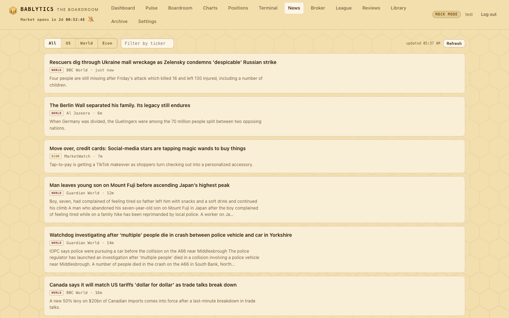
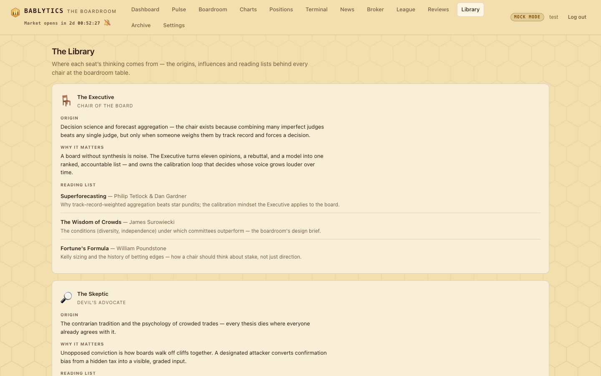

Desk · reading rooms
News, the Library and the Archive
The News wire the desks read, the Library that documents where each of the sixteen seats' thinking comes from, and the Archive — every past morning, court, check and journal, browsable and searchable by ticker.
Three routes are reading rooms rather than workspaces. News is the same wire the Domestic and Foreign Desks read each morning, live. The Library is the catalogue of the board itself — origin, rationale and a reading list per seat. The Archive is the historical record: every day the board worked, in the order it happened, with a search across all of it. All three are read-only.
Looking for how a past book performed rather than what was said about it? That is the Leads Desk, which takes the same days and shows each lead's move since — on the stock and on the contract. Every day in the Archive links across to it.
News#

The News tab (#/news) aggregates the app's RSS collectors through GET /api/news?scope=&ticker=&limit=50 with a ten-minute in-process cache. Controls:
- Scope pills
- All · US · World · Econ. US is the domestic feed set (CNBC, MarketWatch, Yahoo Finance, CNN Business); World is the foreign set (BBC Business, BBC World, Al Jazeera, Guardian World); Econ is the government statistical-release feeds (BLS, BEA, Census) plus domestic headlines that match the economic-print keyword list (CPI, payrolls, GDP, PCE, ISM, …).
- Filter by ticker
- Narrows to articles whose text matched that universe ticker, using the same matching helper the pipeline uses to attach news to candidates.
- Refresh
- Reloads now; the tab also auto-refreshes every five minutes while it is open and shows the time of the last load.
Each row shows the headline (linking out to the source in a new tab), a scope tag, the source name, the article's age, a short summary, and matched-ticker chips that deep-link to #/charts/<TICKER>. Feeds are fetched with timeouts and degrade per feed: a dead feed drops out of the list rather than breaking the page. The feed URLs are listed in bablytics/config.py; what leaves your machine to fetch them is described under Data & privacy.
The Library#

The Library (#/library) documents where each of the sixteen seats comes from, served by GET /api/library from bablytics/boardroom/library.py. For every member — the Executive, the Skeptic, the two news desks, Flow, the Watchdog, Dagger, the Chartist, the Glazier, Sam, the Oracle, Graham, the Black Swan, the Croupier and the Timekeeper — the page gives:
- Origin
- The tradition or discipline the perspective is built from — decision science for the chair, the contrarian tradition for the Skeptic, the Edwards & Magee gap taxonomy for the Glazier, the owner's own "Hedging the Wheel" paper for the Croupier.
- Why it matters
- Why that way of thinking earns a chair at the table.
- Reading list
- Two to four titles per seat, forty-three in all, each with author and a one-line note on what it contributes. A reading list, not a syllabus.
Every member head links to the member's dossier (#/member/<key>) — track record, journal, paper book. Who the seats are and how they grade is on The Board.
The Archive#

The Archive nav entry (#/history, also reachable as #/archive) is the historical record, built on three read-only routes in bablytics/routes_archive.py. Nothing in it writes a row.
The day index#
A timeline of days, newest first (GET /api/archive?limit=&before=; the tab loads 60 days at a time). Each card shows the date and status, the lead count, the morning memo's headline, the book's Avg 1d / Avg 5d / Winners 1d, the top lead with its grade, the Evening Court's headline when one exists, and chips for the sessions that ran that day: pre-open, midday, evening, the journal count (sixteen when the whole court filed), and Bailiff events. A session that did not run renders as a muted "—" chip — the archive reports its own gaps. Click a card to open the day.
"What did we say about…"#
The search box at the top asks the question that makes a record worth keeping. Enter a ticker (and optionally one member) and GET /api/archive/search returns every lead the board ever filed on that name, newest first: run date, direction, instrument, the final grade, the board's min–max range, the realized 1d/5d outcome, and whether a Bailiff ruling fired on it. With a member set, you see that seat's grade and note per lead instead of the board's. Rows link back to their day. An empty query is refused with 400 rather than dumping the whole table.
The day view#
#/archive/<run_id> loads everything for one day in a single payload (GET /api/archive/{run_id}) and lays it out in the order the day actually happened, every section collapsible and deep-linkable:
| Section | Anchor | What it holds |
|---|---|---|
| ☀ Morning book | #/archive/<id>/morning | The leads with their grades, the board-range rail and realized outcomes where they exist; a lead the Bailiff closed in the record shows its close. |
| 🔔 Pre-open check | …/preopen | The 9:15 panel's reads and the Executive's verdict. |
| 🕧 Midday check-in | …/midday | The 12:30 reads and closes applied. |
| ⚖ Bailiff docket | …/bailiff | The rulings and which fired, with events. |
| 🌙 Evening Court | …/evening | The report plus all sixteen journals — each member's on-base / off-base / lesson, with name and emoji inline. |
| 📓 Owner trades | …/trades | Manual trades whose entry or exit date is that day. |
Sections that never ran are marked, not hidden. Previous / next arrows step through days, and the [ and ] keys do the same (oldest to the left); at either end a toast tells you so. Deep links survive a reload: a cold #/archive/14/evening paints the day and scrolls to the court.